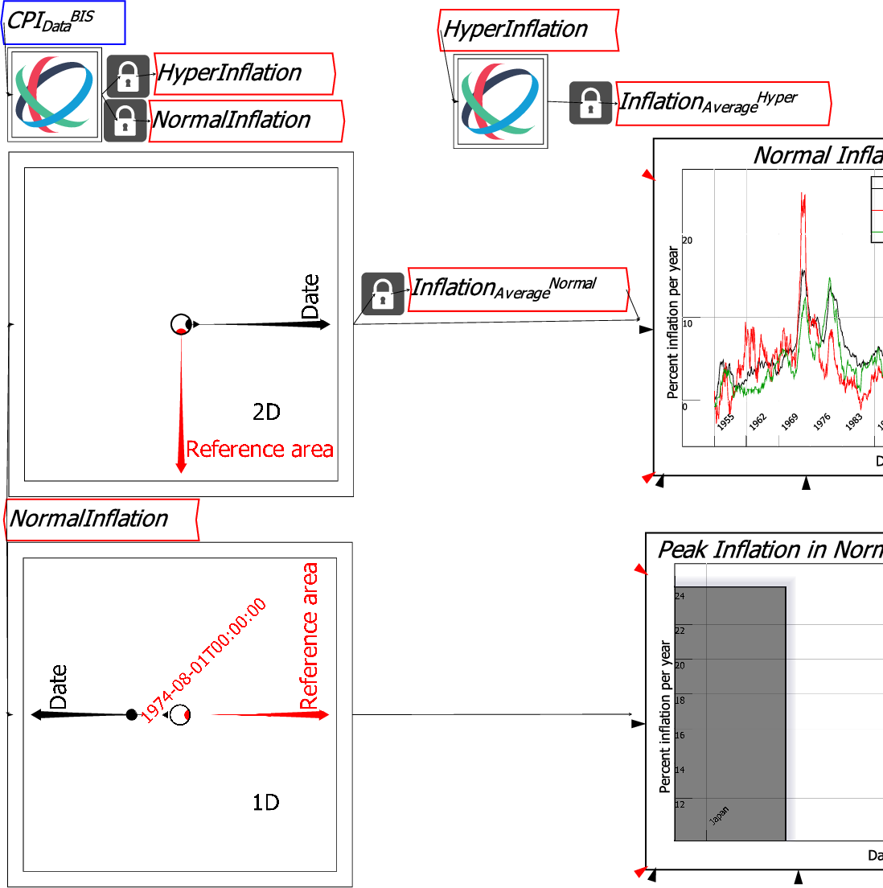

A Ravel outputs the data in the right-pointing axis as the series for graphing in a plot, and as the rows of a sheet. In the previous figures, Date was the right-pointing axis, which generated a set of time series for plotting (the data shown on the Y1 axis). In the next figure, Reference Area is rotated into the right-pointing axis position in the second plot, which means that Date data now generates the x-axis information. The y-axis information is therefore the rate of inflation on a specified date. The second plot in the figure below shows the annual inflation rates for Japan and the USA at the highest point for the inflation data since WWII. Since this date follows the Oil Embargo imposed by OPEC members after the Yom Kippur War, this implies that the main cause of the inflationary surge was the four-fold increase in oil prices (from US$2.50 a barrel to $10) caused by the embargo.
